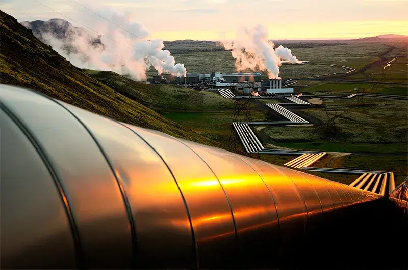
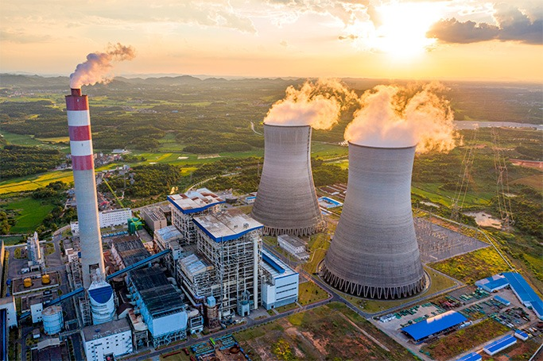
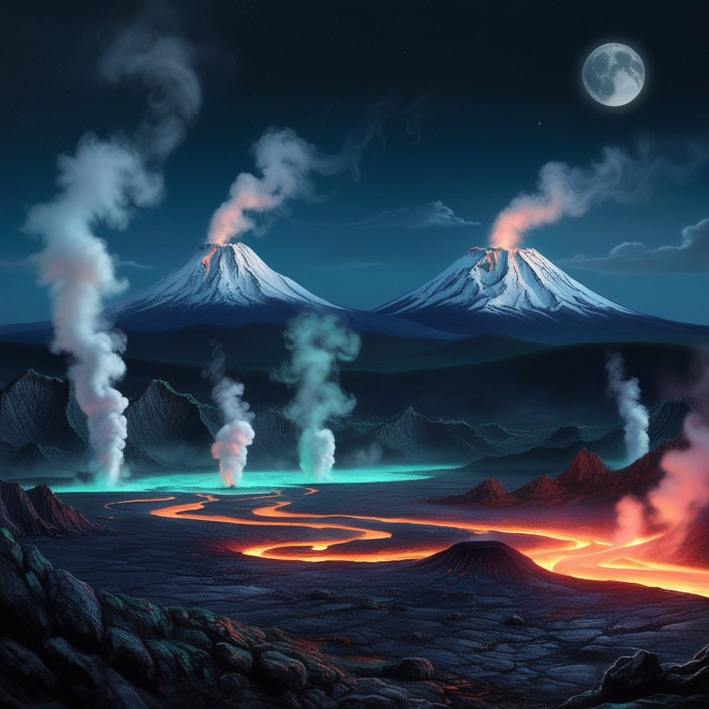
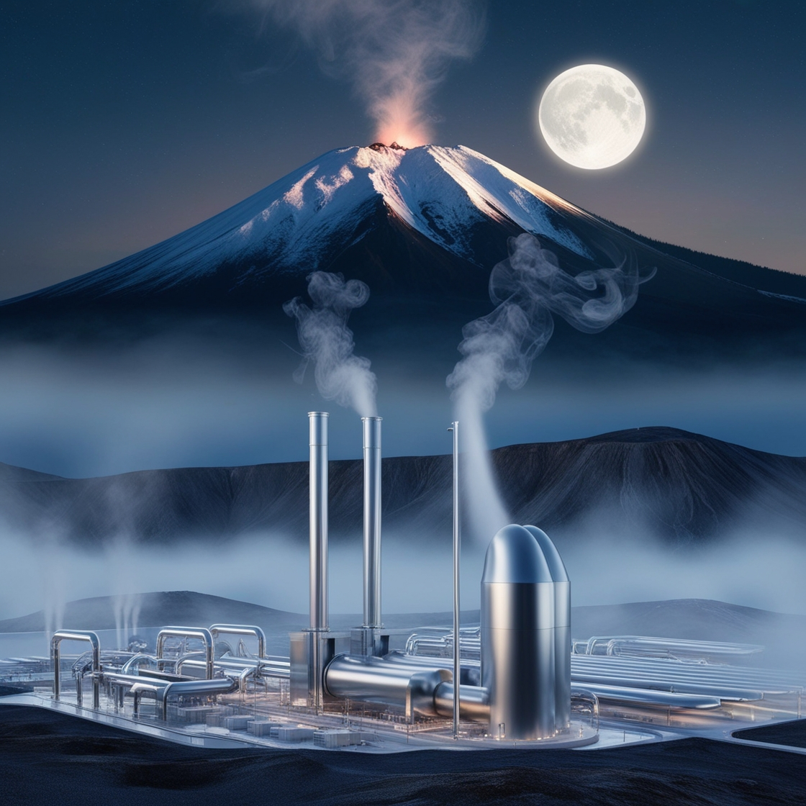

Proyecto de energía geotérmica.


Definicion de energía geotérmica.
La energía geotérmica es una forma de energía renovable que se obtiene del calor almacenado en el interior de la Tierra. Este calor proviene principalmente del núcleo terrestre y del decaimiento radiactivo de minerales en el manto. La energía geotérmica se manifiesta en forma de aguas termales, géiseres, volcanes y fuentes de vapor, pero también puede ser extraída a través de perforaciones para aprovechar las altas temperaturas del subsuelo.
Como se obtiene la energía renovable.
Para aprovechar la energía geotérmica, se utilizan sistemas especializados que incluyen:
1. Sistemas de alta temperatura: Usados en centrales eléctricas, donde el vapor generado a partir de depósitos subterráneos impulsa turbinas que producen electricidad.
2. Sistemas de temperatura moderada: Utilizados para calefacción y refrigeración en edificaciones.
3. Bombas de calor geotérmicas: Aprovechan las temperaturas constantes del subsuelo para aplicaciones residenciales o comerciales.
:


Importancia de la energía geotérmica.
La energía geotérmica tiene un papel crucial en la transición hacia fuentes de energía más sostenibles y menos contaminantes. Su importancia radica en varios aspectos fundamentales:
1. Energía Renovable y Sostenible:
La energía geotérmica es prácticamente inagotable a escala humana. Mientras el núcleo de la Tierra continúe generando calor, esta fuente de energía seguirá siendo accesible a diferencia de los combustibles fósiles.
2. Reducción de Emisiones de Gases de Efecto Invernadero:
La generación de energía geotérmica emite significativamente menos dióxido de carbono (CO₂) y otros gases contaminantes en comparación con las plantas que usan combustibles fósiles.
3. Eficiencia Energética:
La energía geotérmica es una de las fuentes más eficientes, ya que puede operar las 24 horas del día, los 365 días del año. A diferencia de la solar o la eólica, no depende de condiciones climáticas o de luz solar.
4. Conservación de Recursos Naturales:
A diferencia de otras tecnologías que requieren grandes cantidades de agua, la energía geotérmica utiliza sistemas cerrados que recirculan el agua en el subsuelo, reduciendo el impacto ambiental y el consumo de recursos hídricos.